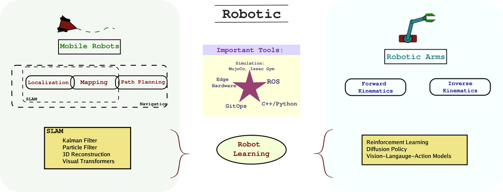
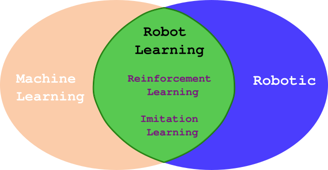
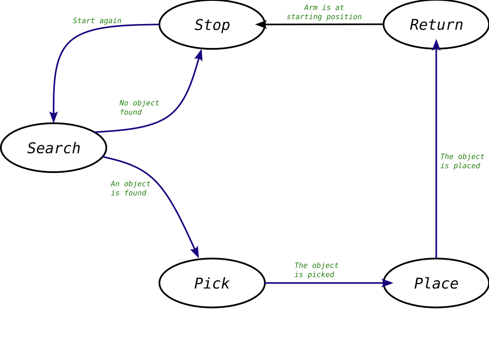
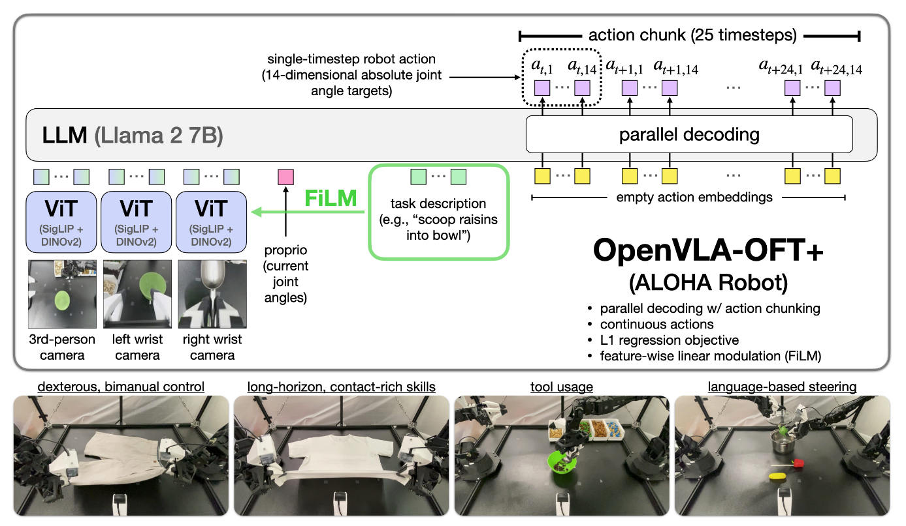
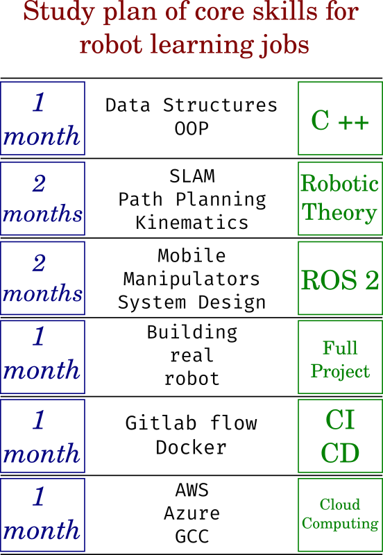

Skill-Set and Study Plan for Robot Learning Career

Robot Learning is the field utilizing Machine Learning and Deep Learning methods for training AI models to perform new physical skills on a robotic platform. The same term is also used for a new type of job titles, namely robot learning engineer, which is commonly focused on Imitation and Interactive learning of robotic skills from recorded datasets. This last formulation also features key words such as diffusion policy, or vision-action-language models. However, many other requirements also exist, such as robotic theory methods for navigation or arms control (like SLAM Filtering methods or Forward/Inverse Kinematic) as well as the usual software development skills like DevOps, Gitlab flow and Cloud computing. In this post we try to draw a full picture of these requirements, why and when they are needed. Additionally, suggested resources to study and projects to build for learning them are also mentioned along with an estimated time for doing that.
Lean startup principle
Table of Content
What is Robot Learning
The term robot learning, is usually utilized in the context of applying state-of-the-art machine learning methods to teach a robotic arm generic skills. This field has witnessed new advances due mainly to the availability of considerable amount of recoded datasets of robotic trajectories doing many different tasks as explained here. In that regard, we can consider this field as the intersection between traditional robotics and the newly advances in machine learning as the figure below shows.

Robot Learning as an intersection between two fields
However the definition also include a wide variety of robotic tasks for mobile robot navigation too. For a developer to optimally apply these methods, the machine learning perspective of the problem should be complemented by the robotic principle driving this learning. This requires experience in Filtering methods for localization and mapping, optimization methods for path planning, and matrices operations for inverse kinematic of robotic manipulators. The software stack also has high entry level, such as the popular ROS framework and its many dedicated packages for navigation and arms control.
The figure below illustrates this richness of this field, where the two main branches of robotic platforms are shown along with their main solutions in the literature.
Branches of robotic field and their main methodologies
All these skills are best learned through practical projects, where a successful project showcasing a successful implementation of these requirements can demonstrate your experience.
At the other hand, this very specialized field offers a very promising future. As the current advances in AI are focused on the natural language processing and images generation side of applications, the AI learning of new physical skills with human-like level still lags behind. When such advances occur, your skills will be in a higher demand in addition to being safe from automation.
In the following we will go over the main foundations needed to transfer into this field, where a basic background in computing, data structures and algorithms is assumed. Namely:
- Programming Languages
- Robotic Theory
- Robotic Systems
- Mobile Robotics
- Manipulators Robotics
- DevOps
- Agile and SCRUM Workflows
- Cloud Computation
Programming Languages
While Python is common viable option to use in your robotic projects as the programming language, for instance on edge hardware or utilizing the popular ROS framework, you will have the optimal runtime performance using other compiled languages like C or C++. Additionally, the control level that C++ enables, for example, is valuable for controlling and managing resources with higher efficiency. Runtime and resources management are crucial features for successful robotic systems applications especially in constrained edge hardware environment.
However, C++ is indeed harder to master the python, where a lot of practice is needed. What you will mainly need to learn are the basic control and OOP in C++, as well as some essential more specialized libraries such as OpenCV for image processing and Boost for linear algebra.
Additionally to build C++ packages in ROS you need packages like CMake, and familiarity with its main syntax. This is will not be needed in Python as it doesn't require building.
-
Resources: C++ DSA (Data Structure and Algorithms): a book containing a lot of detailed examples and exercises covering both object oriented and functional programming.
-
Project: Build a basic robotic program of your choice, preferably with ROS, for example a navigation algorithm for a mobile robot inside indoor environment.
-
Expected time: (1-2 Months). Mastering C++ is a life long journey, but to reach a comfortable level one to two months of full time study and programming is reasonable period.
Robotic Theory
The field or robotic may seem huge and hard to categorize, as there are virtually all kind or robots: ground, flying or underwater, autonomous or controlled, humanoid or four-legged. However, from the perspective of the functional part, we need to solve two main tasks in any robotic project: navigation and manipulation. The first problem requires mapping, localizing and path planning of the robot, while the second involves controlling a robotic arm by solving the forward/inverse kinematic problem either in iterative or machine learning manner.
Therefore a through understanding of the following problems and the methodologies to address them is essential to work on robotic projects:
-
Simultaneous localization and mapping (SLAM)
- Extended Kalman Filter
- Particle Filter
-
Path Planning
- A star
- D star
- Rapidly-Exploring Random Trees (RRT)
- Dubins planner
- Reinforcement Learning
-
Forward and Inverse Kinematic
- Numerical Iterative Methods
- Reinforcement Learning
- Diffusion Policy
- Vision-Language-Action Models
Each sub-bullet shows the common methods to address these tasks. More details will follow below in the next sections.
Robotic Systems
Designing and later implementing a fully functional robotic system requires careful planning of the control algorithm while considering the hardware and operational available capabilities. Additionally this general algorithm should be drafted in compatible manner with the underlying middleware (for instance ROS framework) in order to leverage the community contributed packages and avoid reinventing the wheel
One common choice of program structure for simple applications is Flow State Machines (FSM), which forms the programs as nodes and edges with transitions (conditions) between them. Additionally Behavior Trees (BT) are also commonly used for complex logic. In fact, ROS Nodes can be integrated directly with the BT nodes structure.
As an example of FSM, let's consider a pick-and-place task done by robotic arm. As a first step you will need to define all the states that the arm could be working in:
- Searching for the item
- Picking (end effector empty)
- Placing (end effector full)
- Returning to starting position
- Stopping
The next step is to connect each of the previous states to all the possible future states, while marking the required condition for that transfer. This will result in the following graph:

Flow State Machine Program for a simple pick-and-place task
Robotic Operating System (ROS2)
Among the many available robotic frameworks, ROS 2 is the most popular and the most demanded robotic framework in industrial as well as academic fields. This popularity stems from the facts of it being open source, well-documented and maintained project.
What ROS basically does is providing a framework that helps:
-
Designing a FSM or Behavior Tree (BT) programs due to its graph-like architecture containing nodes, topics, service and actions.
-
Utilizing the vast code libraries of the community, due to its standardization of the topics messages interfaces and data types of many famous sensors, actuators, or other hardware.
-
Leveraging suitable communication protocols between nodes (Data Distribution Service DDS for ROS2), and therefore avoiding the task of rewriting and maintaining stable communication channels.
For learning ROS2, the books of ROS 2 from Scratch or A Concise Introduction to ROS provide good head start for learning it. Additionally, ros.org website documentation is valuable resource for the new learner as well.
Project: utilize the turtles simulator provided by ROS to make a basic navigation-towards-a-goal program, preferably in C++.
Expected Time: 1-2 Months
Mobile Robotics
Mobile robots (especially ground car-like robot) is very common variant of robots to start you learning journey from. Assuming that you have already built your hardware, what you need to do next is defining exactly the shape of its output (sensor readings) and input (control commands).
Then you will need to design your navigation logic. Depending on the task this will include the steps of:
- Localization: defining the robot current position.
- Mapping: defining the robot current surrounding.
- Path Planning: defining the exact trajectory that the robot should follow
The problem of simultaneous localization and mapping is known as SLAM, and it is traditionally addressed by filtering methods, like extended kalman filter or particle filter.
These methods will require some mathematical background of instance about metrics operations to understand. Additionally designing and tunning these filters require some practice. The book of [Kalman book] provides great explanation about these topics.
As for path planning, the literature mainly represents the environment map as either graph or occupancy grid with methods like Bug 2 or A star, which finds the optimal path by minimizing the cost to come added to the cost to reach a specific goal.
However, these methods require defining the starting and goal positions as fixed points, which makes it computationally expensive for dynamic environments with a variable goal location. That has motivated the development of methods like Rapidly-exploring Random Trees RRT, which samples different random poses in the current map and then performs A star search utilizing these poses.
It should be mentioned also that the actual commands of the robots, driving the continuous path, will depend on the robots model (bicycle model, single-wheel model). This is can be achieved by connecting the previous waypoints (from A star and RRT) by another planner like (Dubins planner)
Additionally all these provided solutions are considered rule-based methods, and don't utilize machine learning directly. But a utilization of Reinforcement Learning approach is also possible, as it could replaces all of the three planning methods (RRT + A start + Dubins) or be combined with any of them replacing the rest. This is actually a planned future post topic of this blog, to showcase this utilization. It's also worth mentioning that such RL solution will require a simulator to learn navigation interactively.
One comprehensive book that delves into the many path planning methods is [lavallel 2011]. You may not read it all if your target is specific algorithm, like A star, which can be explained in few pages only. Additionally for a through introduction to the reinforcement learning topic, you can check our previous post here.
Nav2: ROS Mobile Navigation Package
Nav is a specialized navigation library within ROS 2 framework offered as open source, providing many useful functionalities for localization, mapping and planning based on well-known methods. You can utilize these implementation directly in your project avoiding the cost of rewriting them. For more details check its comprehensive documentation here.
Manipulators Robotics
Robotic arms and manipulators represent a different problem and platform than mobile navigation, although sometimes they could be combined as in humanoid robots. An arm is defined as a group of links connected together by joints with certain number of rotational or transitional degrees of freedom for each.
To start programming the movements of robotic arms, an understanding of the forward and inverse kinematic models of their motion is needed. Where forward kinematic is the problem of finding the exact pose of the end effector for a given set of joints angles, while inverse kinematic is the reversed problem for finding the joints possible configurations corresponding to specific end effector pose.
The solution to the first problem can be found easily geometrically; however the second problem requires usually iterative solutions especially if the full trajectory from one pose to another is requested. Nevertheless, other approaches like reinforcement learning is also possible, but its success is dependent on the task, as for some tasks, where the state and action spaces are huge, the interactive learning would be very slow to converge and therefore not practical.
Vision-Language-Action Models
More recently, large robotic datasets for arms movements were increasingly published and open sourced. This has opened the door to a new kind of imitation learning approaches for robotic arms, such as Diffusion policy or even Vision-Language-Action models (such as OpenVLA). In this latter approach namely, the models depends on Large Language Models with Vision component in order to control variety of robotic arms for the purpose of achieving a task described by a text passed to the model.

OpenVLA structure: source here: https://arxiv.org/pdf/2502.19645
For a good introductory resource of the topic of robotic arms Robotic Vision and Control provides a detailed explanation of its concepts. A thorough understanding of the book material requires some math background, like the concept of matrices derivatives, and can take around one month.
MoveIt
Another ROS-compatible software targeting robotic arms, is MoveIT. It supports many kind or robotic arms and is open source as well. A comprehensive documentation for this library is available here
Simulation
We mentioned previously the need for simulation to train reinforcement learning models. In the literature many simulators, with different characteristics and use cases are available. Like Gazebo, the simulator accompanying ROS. More advanced simulators like MujoCo, with its accurate physical modeling or Issac Gym with its GPU accelerated simulation are also common for simulating, training, and testing commercial robotic projects. Our previous post on MujoCo is available here.
Continues Integration and Continuous Deployment
Continues integration and continuous deployment (CICD), is the methodology of incremental improvement combined with frequent releases. By utilizing an automated pipeline to do so, for instance within Gitlab, your software project can be easier to maintain and faster to deliver a final product.
Robotic projects are no exception, where automating unit testing and building the package is of great importance for more readable and collaboration-friendly code.
- Resources: one good (paid) book about CICD in Gitlab is Automating DevOps with GitLab CI/CD Pipelines
- Project: implement the same mobile robot project above but with Gitlab runners to test and build each commit of the code.
- Expected time: 1 Month or less.
Agile and SCRUM Workflows
Among other required skills worthy of mentioning for robotic engineer position is the ability to work with Agile workflow methodology like (SCRUM). SCRUM is working methodology for teams, known for its flexibility, and iterated experimental mentality. Therefore, it is a philosophy to be adapted combined with robust work schedule. A good resource introducing the basics of SCRUM is "Scrum for dummies"
Cloud Computation
This skill is one of the most common requirement for Machine Learning and Robotic Jobs. This is due to the many advantages the cloud computing provides over on-premise alternatives.
Having hands-on experience of AWS or GCC is a very beneficial for more chance of getting into an robotic or any ML-related jobs.
- Resources: AWS for non engineers
- Project: Try training RL model for path planning on AWS.
- Expected time: 2 Months.
Complete Timetable
To summarize, we list each of the previous skills, and the expected time (on average) to study it, given 4 to 6 hours of study per day, basic understanding of programming concepts with a mathematical background on linear algebra and matrices operations.The full study path takes in this case around 8 months.

Main skills and their estimated study time ordered seqationally to qualify for robotic/ml engineer roles.
Conclusion
In this post we reviewed the hard skills needed for robot learning roles. Providing resource and description of each learning step. Although the field is exciting, it still has a high entry threshold. We saw also that its combination of required skills involves both machine learning and robotic positions skills.
If you're interested to learn more details in an easy-manner about these steps, I encourage you to keep following my upcoming planned posts about the topic blog, whether on Medium, Linkedin, or Substack. These posts will be targeted to hands-ons examples showcasing these concepts.